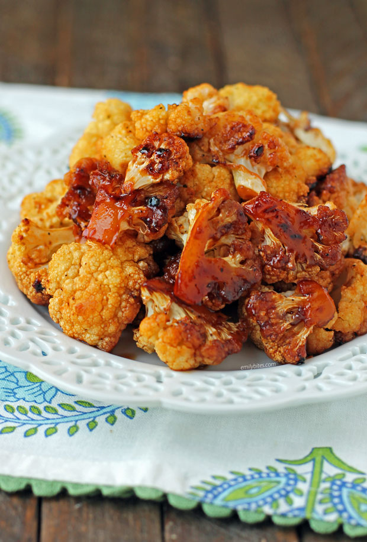

SPICED CAULIFLOWER

Description
This is some yummy cauliflower. Slurp it up. yum yum.
you like to eat that? yes you do you big ol chub a lub.
aint nothing wrong with a bit of chub. eat it and get your gains on. yummers.
Ingredients
- cauliflower
- tumeric
- cumin
- salt
- pepper
- olive oil
Steps
- preheat oven to 400 degrees farenheight
- cut cauliflower into 1 inch slices and place on a sheet pan
- add spices to a bowl, mix, then sprinkle over the cauliflower
- place cauliflower in oven, bake for 20 minutes, flip, then bake
for another 20 minutes. Remove from oven, and serve with fresh herbs and hummus.